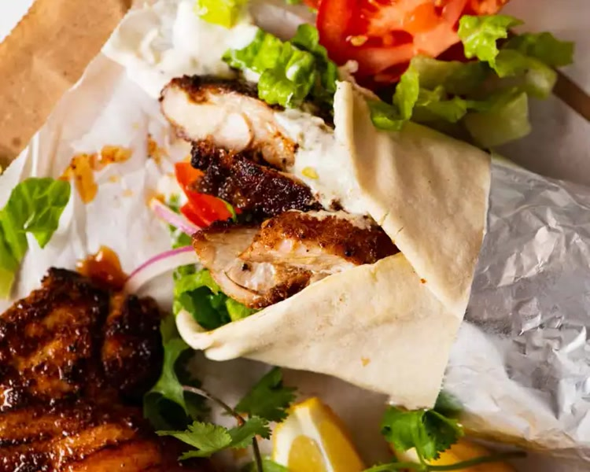

Schawarma

Description:
This Chicken Shawarma Lavash takes the flavors you crave when you want shawarma, but rolls it into a lavash. The crispy lettuce
(or arugula) and tomato blend perfectly with the chicken shawarma and garlic dill sauce. This is envy inducing lunch, but it
also a great after-school snack. It will hold even hungry teens over til dinner.
Ingredients:
- Chicken Shawarma Marinade
- 2 lb 1kg skinless, boneless chicken breasts, cubed
- 2 teaspoon ground cumin
- 2 teaspoon ground coriander
- 2 teaspoon dried oregano
- ¼ teaspoon ground turmeric
- ½ teaspoon ground red pepper cayenne
- ½ cup plain yogurt
- 1 tablespoon garlic minced
- Salt
- Black pepper
- 2 tablespoons olive oil
- Dill Sauce
Garlic
- ½ cup plain yogurt
- ¼ teaspoon garlic minced
- ¼ teaspoon dried dill
- 1 tablespoon tahini
- 1 tablespoon lemon juice
- 2 tablespoons water or more if the sauce is too thick
- Salt
- Sriracha if you prefer spicy
- Lavash Roll
- 4 California Lavash
- ½ head romaine lettuce or arugula
- 1 medium cucumber halved and sliced
- 2 medium Roma tomatoes sliced
- 1 tablespoon olive oil
Steps:
- Chicken Shawarma: mix all the ingredients except the oil in a bowl. Place the chicken in the bowl and coat it
well, cover it, and place it in the refrigerator for at least 4 hours up to 24 hours.
- Preheat your oven to 350°F.
- In a large baking dish, spread 1 tablespoon of oil, add the chicken and mix well. Arrange the chicken in one
single layer, if possible. Bake uncovered for 1 hour until cooked (no pink in the center).
- Add the remaining oil in a large skillet over medium-high heat. Add the chicken slices. Sauté until they are
golden brown and crispy. If necessary, add 1 tablespoon of oil if the chicken is too dry.
- Garlic Dill Sauce: place all the ingredients in a medium bowl. Whisk them all together until creamy and smooth.
- To assemble: spread the garlic dill sauce in the middle of each lavash. Add arugula, romaine lettuce, tomatoes,
cucumber, and chicken. Roll up the lavash. Toast the lavash roll in a sandwich press or dry griddle until golden
brown and crispy. Serve as a roll or cut it into smaller rounds. Use the remaining garlic dill sauce as a dip.